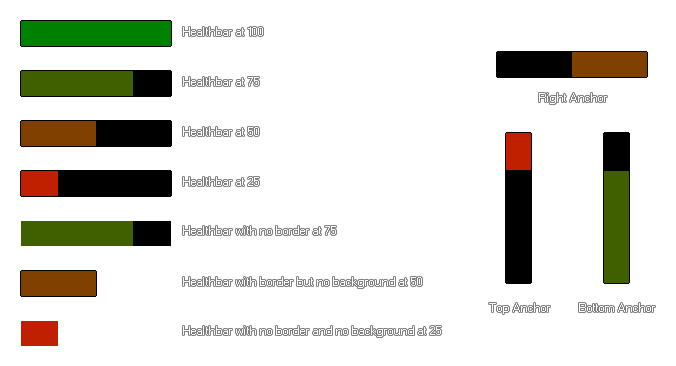

draw_healthbar(x1, y1, x2, y2, amount, backcol, mincol, maxcol, direction, showback, showborder);
| Argumento | Descripción |
|---|---|
| x1 | La coordenada x de la izquierda de la barra de estado |
| y1 | La coordenada y de la parte superior de la barra de estado |
| x2 | La coordenada x del derecho de la barra de estado |
| y2 | La coordenada y de la parte inferior de la barra de estado |
| amount | La variable que define la salud total (entre 0 y 100) |
| backcol | El color del fondo de la barra |
| mincol | El color de la barra cuando no tiene salud (0) |
| maxcol | El color de la barra cuando está lleno de salud (100) |
| direction | Donde la barra está "anclada" (0 = izquierda, 1 = derecha, 2 = arriba, 3 = abajo) |
| showback | Si el fondo de la barra está dibujado ( true ) o no ( false ) Si es falso, el argumento backcol no se tiene en cuenta. |
| showborder | Si los elementos de la barra tienen un borde negro ancho de 1px ( true ) o no ( false ) |
Devoluciones: N / A
Con esta función, puede dibujar una barra de color para mostrar un valor constante. Aunque la función utiliza la palabra "barra de estado", puede usar esto para mostrar todo lo que desee, siempre que la cantidad que se mostrará sea un valor porcentual entre 0 y 100 (un porcentaje de cualquier valor se puede calcular con la fórmula (CURRENT_Value / MAXIMUM_value) ) * 100 ), por lo que, por ejemplo, puede usar esto para mostrar la potencia, la salud, el maná, el tiempo o cualquier otra cosa que se beneficiaría de la visualización de una barra.
Puede configurar varias cosas diferentes que cambian el aspecto visual de la barra y estas se ilustran en la imagen a continuación (tenga en cuenta que los colores utilizados aquí son c_green por el valor máximo y c_red para el valor mínimo, pero puede usar los colores que desee): 
var pc;
pc = (hp / max_hp) * 100;
draw_healthbar(100, 100, 500, 200, pc, c_black, c_red, c_lime, 0,
true, true)
El código anterior usa el valor porcentual que obtiene de las variables "hp" y "hp_max" para dibujar una barra de estado estándar roja / verde.